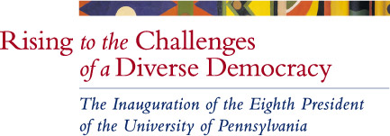

Inaugural Symposium in Honor of President Amy Gutmann
University of Pennsylvania,
Friday, October 15, 2004
Members of the Penn faculty and guests gathered to celebrate
with students, staff, alumni, and trustees the Inauguration of
Amy Gutmann as President of the University of Pennsylvania by exploring
the role of the modern university in strengthening democracy in
a diverse global community. For almost three decades, President
Gutmann’s writings, public leadership, and teaching have
focused on the core values of democratic societies — life
and liberty, opportunity, and mutual respect — and explored
the roles of education and deliberation in realizing those values
at home and around the world.
As the University of Pennsylvania
welcomed its new President and rededicated itself to the mission
of service to humanity bequeathed
by its founder, Benjamin Franklin, the University community explored
together the many ways in which universities can rise to the challenges
of realizing these core democratic values in the
21st century.
Five interdisciplinary panels brought a wide range
of experience and expertise to bear on these questions that are
central to understanding
the role of higher education — and the University of Pennsylvania — in
our diverse democratic societies and global communities of the
21st century.
Except as otherwise noted, all panelists are members
of the University of Pennsylvania faculty.
1:30-3:00 p.m.
Concurrent sessions
| 1. Creating and Communicating
Knowledge in an Unequal World
Click
to watch.
How, in an era of staggering complexity
and instant global communication, can
the flow of new knowledge and information
among widely disparate populations strengthen
democracy, enhance individual lives, and
promote mutual respect and understanding?
|
| Panel Chair: |
Ms. Andrea Mitchell, Chief Foreign Affairs Correspondent,
NBC News |
| Panelists: |
Professor Elijah Anderson, Department of Sociology, School
of Arts and Sciences
Professor John J. Dilulio, Jr., Department
of Political Science, School of Arts and Sciences
Professor Kathleen Hall
Jamieson, Annenberg School for Communication
Professor Fernando
Pereira, Department of Computer and Information
Science, School of Engineering and Applied Science
|
| Location: |
Auditorium, Jon M. Huntsman Hall (new location)
 |
|
2. Improving Lives by
Investing in Science and Medicine
Click
to watch.
How can universities like Penn ensure that
science and medicine sustain lives and
improve the quality of life for all, in
a world that is at once desperately in
need of their intervention yet also often
threatened by their impact? |
| Panel Chair: |
Professor Barbara L. Weber, Abramson Cancer Center, School
of Medicine |
| Panelists: |
Professor Arthur L. Caplan, Center for Bioethics,
School of Medicine
Professor Michael L. Klein, Department
of Chemistry, School of Arts and Sciences
Professor Mary
D. Naylor, Hartford Center of Geriatric Nursing Excellence,
School of Nursing
Professor David S. Roos, Department of
Biology, School of Arts and Sciences
Professor Ralph L.
Brinster, Department of Animal Biology, School of Veterinary
Medicine |
| Location: |
Wu & Chen Auditorium, Levine Hall
|
3:15-4:45 p.m.
Concurrent sessions
3. Educating
Professionals as Engaged Citizens
Click
to watch.
How should educators of future professionals
— in business, law, social work,
health care, education, engineering, communications,
design, and in the arts and sciences —
prepare their students to meet the challenges
of democratic leadership and contribute
to social justice in our ever more diverse
society?
|
Panel Chair:
|
Professor Sarah Barringer Gordon, Law School
|
| Panelists: |
Professor Thomas Donaldson, Department of Legal Studies,
Wharton School
Professor Sarah H. Kagan, Hartford Center
of Geriatric Nursing Excellence, School of Nursing
Professor
Laurie D. Olin, Department of Landscape Architecture,
School of Design
Professor Dennis Thompson, Center for
Ethics and the Professions, Harvard University |
| Location: |
Logan Hall, Room 17
|
| 4. Leading and Learning
from Local and Global Communities
Click
to watch.
How do modern research universities like
Penn productively collaborate with and
learn from — as well as lead —
the many different communities in which
they operate, ranging from the local to
the global?
|
| Panel Chair: |
Mr. Jon Huntsman, Chair,
Huntsman Corporation |
| Panelists: |
Professor Judith Ann Buchanan, Department of Community
Oral Health, School of Dental Medicine
Professor Michael
Useem, Department of Management, Wharton School
Professor
Dennis Culhane, School of Social Work
Professor Margaret
Beale Spencer, Graduate School of Education |
| Location: |
F85, Jon M. Huntsman Hall (new location)
|
5. Making the Most of Our Cultural Differences
Click
to watch.
How does diversity — of peoples,
values, ideas, and experiences —
enhance the educational and research capacities
of universities and become an invaluable
resource for democratic societies facing
the challenges of an increasingly demanding,
dangerous, and unpredictable world?
|
| Panel Chair: |
Professor
Henry Louis Gates, Jr.,
Department of African and African-American Studies, Harvard
University |
| Panelists: |
Professor K. Anthony Appiah, Department of Philosophy,
Princeton University
Professor Howard F. Chang, Law School
Professor Ania
Loomba, Department of English, School of Arts and Sciences
Professor
Barbara Savage, Department of History, School of Arts
and Sciences |
| Location: |
Auditorium, Jon M. Huntsman Hall
|
5:00-6:00 p.m.
Inaugural Symposium
Reception
| Location: |
East Hall, Eighth Floor, Jon M. Huntsman
Hall
|
Academic Facilitator of Symposium: Lance Donaldson-Evans,
Professor of Romance Languages and Past Chair, Faculty Senate
View maps of the Penn
campus.

|
Professor Ania Loomba
|